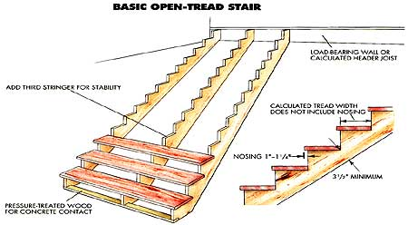

Left: An open stair can be given a more finished appearance by adding skirt board trim to the sides. The risers are mitered to the trim's edges, and molding is nailed beneath each tread. Above: There are a number of ways to attach stringers at the top and bottom. In some cases, the ceiling header can be used as the stair's top riser.